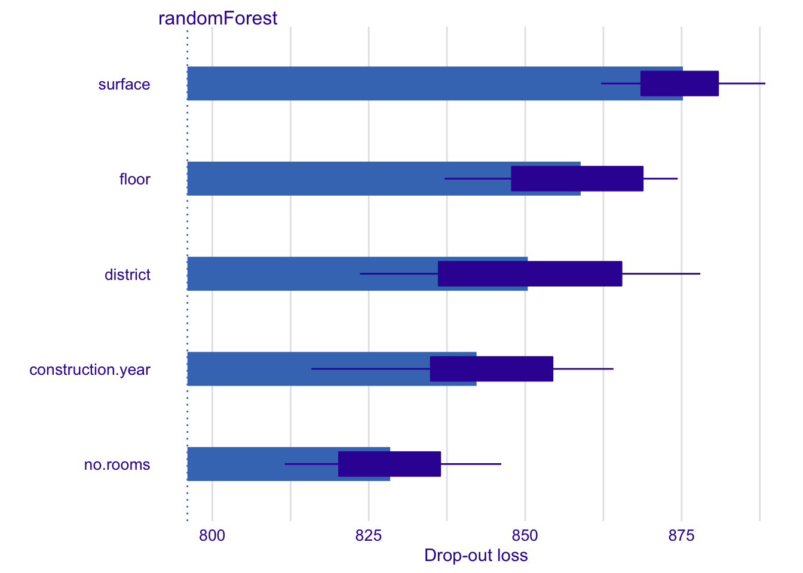
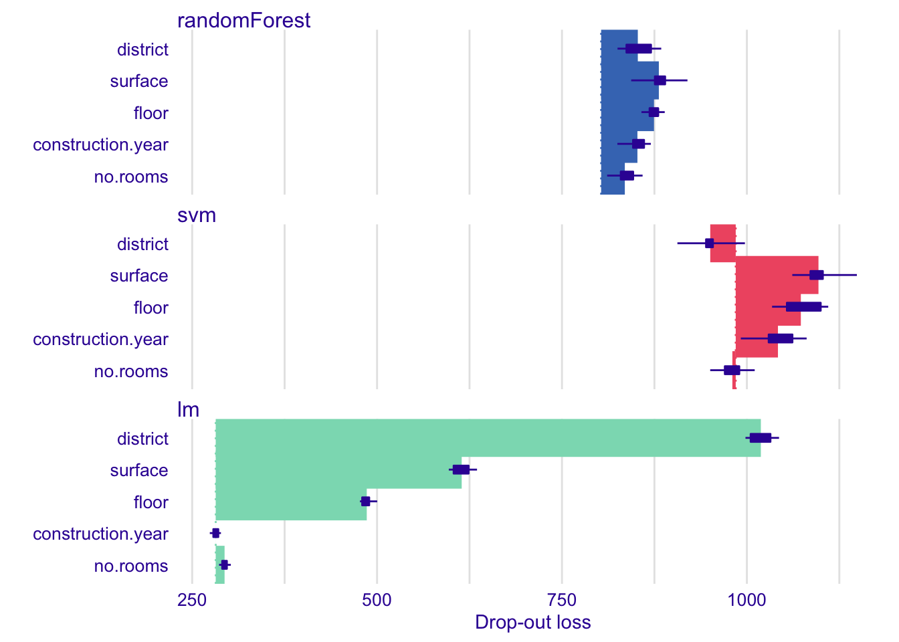

Chapter 15 Variable’s Importance
15.1 Introduction
In this chapter, we present methods that are useful for the evaluation of an explanatory variable’s importance. The methods may be applied for several purposes.
- Model simplification: variables that do not influence model’s predictions may be excluded from the model.
- Model exploration: comparison of a variable’s importance in different models may help in discovering interrelations between the variables.Also, ordering of variables in function of their importance is helpful in deciding in what order should we perform further model exploration.
- Domain-knowledge-based model validation: identification of the most important variables may be helpful in assessing the validity of the model based on the domain knowledge.
- Knowledge generation: identification of the most important variables may lead to discovery of new factors involved in a particular mechanism.
The methods for assessment of feature importance can be divided, in general, into two groups: model-specific and model-agnostic.
For models like linear models, random forest, and many others, there are methods of asssing of variable’s importance that exploit particular elements of the structure of the model. These are model-specific methods. For instance, for linear models, one can use the value of the normalized regression coefficient or its corresponding p-value as the variable-importance measure. For tree-based ensembles, such a measure may be based on the use of a particular variable in particular trees (see, e.g., (Foster 2017) for gradient boosting and (Paluszynska and Biecek 2017a) for random forest).
In this book we focus on model-agnostic methods. These methods do not assume anything about the model structure. Therefore, they can be applied to any predictive model or ensemble of models. Moreover, and perhaps even more importantly, they allow comparing variable’s importance between models with different structures.
15.2 Intuition
We focus on the method described in more detail in (Fisher, Rudin, and Dominici 2018). The main idea is to measure how much the model fit decreases if the effect of a selected explanatory variable or of a group of variables is removed. The effect is removed by means of perturbations like resampling from an empirical distribution of just permutation of the values of the variable.
The idea is in some sense borrowed from variable important measure proposed by for random forest. If a variable is important, then, after permutation, model’s performance should become worse. The larger drop in the performance, the more important is the variable.
The method can be used to measure importance of a single explanatory variable or of a group of variables. The latter is useful for aspects - groups of variables that are complementary. Consider for example a behavioral model in credit scoring in which some aggregate, let say number of loans, is calculated for different intervals. In one column there is an aggregate for 1 month, in the next one is for 6 months and in another in one year. If we are interested in a question, how important is the aspect ‘number of loans’ then we can measure the drop in performance if all variables in a given aspect are perturbated.
Despite the simplicity of definition, the model agnostic feature importance is a very powerful tool for model exploration. Values of feature importance may be compared between different models. So one can compare how different models use correlated variables. Models like random forest are expected to spread importance across every variable while in regression models coefficients for one correlated feature may dominate over coefficients for other variables.
15.3 Method
Consider a set of \(n\) observations for a set of \(p\) explanatory variables. Denote by \(\widetilde{y}=(f(x_1),\ldots,f(x_n))\) the vector of predictions for model \(f()\) for all the observations. Let \(y\) denote the vector of observed values of the dependent variable \(Y\).
Let \(\mathcal L(\widetilde{y}, y)\) be a loss function that quantifies goodness of fit of model \(f()\) based on \(\widetilde{y}\) and \(y\). For instance, \(\mathcal L\) may be the value of likelihood. Consider the following algorithm:
- For each explanatory variable \(X^j\) included in the model, do steps 2-5
- Replace vector \(x^j\) of observed values of \(X^j\) by vector \(x^{*,-j}\) of resampled or permuted values.
- Calculate model predictions \(\widetilde{y}^{*,-j}\) for the modified data.
- Calculate the value of the loss function for the modified data: \[ L^{*,-i} = \mathcal L(\widetilde{y}^{*,-j}, y) \]
- Variable’s importance is calculated as \(vip_A(x^j) = L^{*,-j} - L\) or \(vip_R(x^j) = L^{*,-j} / L\), where \(L\) is the value of the loss function for the original data.
Note that resampling or permuting data, used in Step 2, involves randomness. Thus, the results of the procedure may depend on the actual configuration of resampled/permuted values. Hence, it is advisable to repeat the procedure several times. In this way, the uncertainty related to the calculated variable-importance values can be assessed.
The calculations in Step 5 ``normalize’’ the value of the variable’s importance measure with respect to \(L\). However, given that \(l\) is a constant, the normalization has no effect on the ranking of variables according to \(vip_A(x^j)\) or \(vip_R(x^j)\). Thus, in practice, often the values of \(L^{*,-i}\) are simly used to quantify variable’s importance.
15.4 Example: Titanic data
In this section, we illustrate the use of the permutation-based variable-importance method by applying it to the random forest model for the Titanic data (see Section 4.1.3).
Consider the random forest model for the Titanic data (see Section 4.1.3). Recall that the goal is to predict survival probability of passengers based on their sex, age, cityplace of embarkment, class in which they travelled, fare, and the number of persons they travelled with.
Figure ?? shows the values of \(L^{*,-j}\) after permuting, in turn, each of the variables included in the model. [TOMASZ: WHICH LOSS FUNCTION? WHY COUNTRY IS INCLUDED IN THE PLOT?] Additionally, the plot indicates the value of \(L\) by the vertical dashed line at the left-hand-side of the plot.

Figure 15.1: (fig:TitanicRFFeatImp) Variable importance. Each interval presents the difference between the loss function for the original data (vertical dashed line at the left) and for the data with permuted observation for a particular variable.
The plot in Figure ?? suggests that the most important variable in the model is gender. This agrees with the conclusions drawn in the exploratory analysis presented in Section 4.1.1. The next three important variables are class of the travel (first-class patients had a higher chance of survival), age (children had a higher chance of survival), and fare (owners of more expensive tickets had a higher chance of survival).
To take into account the uncertainty related to the use of permutations, we can consider computing the average values of \(L^{*,-j}\) over a set of, say, 10 permutations. The plot in Figure ?? presents the average values. [TOMASZ: IT WOULD BE GOOD TO GET THE SAME X-AXIS IN BOTH PLOTS.] The only remarkable difference, as compared to Figure ??, is the change in the ordering of the sibsp and parch variables.

Figure 15.2: (fig:TitanicRFFeatImp10) Average variable importance based on 10 permutations.
The plots similar to those presented in Figures Figure ?? and Figure ?? are useful for comparisons of variable importance for different models.
Figure ?? presents the single-permutation [TOMASZ: CORRECT?] results for the random forest, gradient boosting (see Section 4.1.4), and logistic regression (see Section 4.1.2) models. [TOMASZ: WHAT LOSS FUNCTION?] The best result, in terms of the smalles value of the goodness-of-fit function \(L\), are obtained for the random forest model. Note, however, that this model includes more variables than the other two. For instance, variable fare variable, which is highly correlated with the travel class, is used neither in the gradient boosting nor in the logistic regression model, but is present in the random forest model. [TOMASZ: BUT, IN CHAPTER 4, ALL MODELS WERE BUILT USING THE SAME SET OF VARIABLES. ARE WE USING DIFFERENT MODELS HERE? THIS IS CONFUSING.]
The plots in Figure ?? indicate that gender is the most important variable in all three models, followed by class.

Figure 15.3: (fig:TitanicFeatImp) Variable importance for the random forest, gradient boosting, and logistic regression models for the Titanic data.
[TOMASZ: STOPPED HERE WITH RE-WRITING]
15.5 Pros and cons
[TOMASZ: TO POPULATE]
15.6 Code snippets for R
For illustration, We will use the random forest model for the apartment prices data (see Section 4.2.3.
Let’s create a regression model for prediction of apartment prices.
library("DALEX")
library("randomForest")
set.seed(59)
model_rf <- randomForest(m2.price ~ construction.year + surface + floor +
no.rooms + district, data = apartments)A popular loss function for regression model is the root mean square loss \[ L(x, y) = \sqrt{\frac1n \sum_{i=1}^n (x_i - y_i)^2} \]
## [1] 193.8477Let’s calculate feature importance
explainer_rf <- explain(model_rf,
data = apartmentsTest[,2:6], y = apartmentsTest$m2.price,
colorize = FALSE)## Preparation of a new explainer is initiated
## -> model label : randomForest ( default )
## -> data : 9000 rows 5 cols
## -> target variable : 9000 values
## -> predict function : yhat.randomForest will be used ( default )
## -> predicted values : numerical, min = 1977.609 , mean = 3511.789 , max = 5839.917
## -> residual function : difference between y and yhat ( default )
## -> residuals : numerical, min = -1970.395 , mean = -0.2658962 , max = 1944.719
## A new explainer has been created!## variable dropout_loss label
## 1 _full_model_ 794.5552 randomForest
## 2 no.rooms 822.6120 randomForest
## 3 construction.year 853.5165 randomForest
## 4 floor 855.3036 randomForest
## 5 district 860.7501 randomForest
## 6 surface 871.8285 randomForest
## 7 _baseline_ 1130.2765 randomForestOn a diagnostic plot is useful to present feature importance as an interval that start in a loss and ends in a loss of perturbed data.

15.7 More models
[TOMASZ: WE SHOULD ONLY USE MODELS THAT WERE INTRODUCED EARLIER.]
Much more can be read from feature importance plots if we compare models of a different structure.
Let’s train three predictive models trained on apartments dataset from the DALEX package. Random Forest model (Breiman et al. 2018) (elastic but biased), Support Vector Machines model (Meyer et al. 2017) (large variance on boundaries) and Linear Model (stable but not very elastic).
Presented examples are for regression (prediction of square meter price), but the CP profiles may be used in the same way for classification.
Let’s fit these three models.
library("DALEX")
model_lm <- lm(m2.price ~ construction.year + surface + floor +
no.rooms + district, data = apartments)
library("randomForest")
set.seed(59)
model_rf <- randomForest(m2.price ~ construction.year + surface + floor +
no.rooms + district, data = apartments)
library("e1071")
model_svm <- svm(m2.price ~ construction.year + surface + floor +
no.rooms + district, data = apartments)For these models we use DALEX explainers created with explain() function. These explainers wrap models, predict functions and validation data.
explainer_lm <- explain(model_lm,
data = apartmentsTest[,2:6], y = apartmentsTest$m2.price,
colorize = FALSE)## Preparation of a new explainer is initiated
## -> model label : lm ( default )
## -> data : 9000 rows 5 cols
## -> target variable : 9000 values
## -> predict function : yhat.lm will be used ( default )
## -> predicted values : numerical, min = 1792.597 , mean = 3506.836 , max = 6241.447
## -> residual function : difference between y and yhat ( default )
## -> residuals : numerical, min = -257.2555 , mean = 4.687686 , max = 472.356
## A new explainer has been created!## variable dropout_loss label
## 1 _full_model_ 282.0062 lm
## 2 construction.year 281.9007 lm
## 3 no.rooms 292.8398 lm
## 4 floor 492.0857 lm
## 5 surface 614.9198 lm
## 6 district 1002.3487 lm
## 7 _baseline_ 1193.6209 lmexplainer_rf <- explain(model_rf,
data = apartmentsTest[,2:6], y = apartmentsTest$m2.price,
colorize = FALSE)## Preparation of a new explainer is initiated
## -> model label : randomForest ( default )
## -> data : 9000 rows 5 cols
## -> target variable : 9000 values
## -> predict function : yhat.randomForest will be used ( default )
## -> predicted values : numerical, min = 1977.609 , mean = 3511.789 , max = 5839.917
## -> residual function : difference between y and yhat ( default )
## -> residuals : numerical, min = -1970.395 , mean = -0.2658962 , max = 1944.719
## A new explainer has been created!## variable dropout_loss label
## 1 _full_model_ 799.9382 randomForest
## 2 no.rooms 827.8470 randomForest
## 3 construction.year 852.1447 randomForest
## 4 district 857.3774 randomForest
## 5 floor 874.5364 randomForest
## 6 surface 898.5794 randomForest
## 7 _baseline_ 1104.9754 randomForestexplainer_svm <- explain(model_svm,
data = apartmentsTest[,2:6], y = apartmentsTest$m2.price,
colorize = FALSE)## Preparation of a new explainer is initiated
## -> model label : svm ( default )
## -> data : 9000 rows 5 cols
## -> target variable : 9000 values
## -> predict function : yhat.svm will be used ( default )
## -> predicted values : numerical, min = 1692.954 , mean = 3493.954 , max = 6256.247
## -> residual function : difference between y and yhat ( default )
## -> residuals : numerical, min = -1553.981 , mean = 17.56927 , max = 2452.467
## A new explainer has been created!## variable dropout_loss label
## 1 _full_model_ 960.1219 svm
## 2 district 902.5403 svm
## 3 no.rooms 956.8193 svm
## 4 construction.year 1010.1792 svm
## 5 floor 1041.8232 svm
## 6 surface 1061.1809 svm
## 7 _baseline_ 1248.4173 svmLet’s plot feature importance for all three models on a single plot.
Intervals start in a different values, thus we can read that loss for SVM model is the lowest.
When we compare other features it looks like in all models the district is the most important feature followed by surface and floor.

There is interesting difference between linear model and others in the way how important is the construction.year. For linear model this variable is not importance, while for remaining two models there is some importance.
In the next chapter we will see how this is possible.
15.8 Level frequency
What does the feature importance mean? How it is linked with a data distribution.
References
Breiman, Leo, Adele Cutler, Andy Liaw, and Matthew Wiener. 2018. RandomForest: Breiman and Cutler’s Random Forests for Classification and Regression. https://CRAN.R-project.org/package=randomForest.
Fisher, Aaron, Cynthia Rudin, and Francesca Dominici. 2018. “Model Class Reliance: Variable Importance Measures for Any Machine Learning Model Class, from the ’Rashomon’ Perspective.” Journal of Computational and Graphical Statistics. http://arxiv.org/abs/1801.01489.
Foster, David. 2017. XgboostExplainer: An R Package That Makes Xgboost Models Fully Interpretable. https://github.com/AppliedDataSciencePartners/xgboostExplainer/.
Meyer, David, Evgenia Dimitriadou, Kurt Hornik, Andreas Weingessel, and Friedrich Leisch. 2017. E1071: Misc Functions of the Department of Statistics, Probability Theory Group (Formerly: E1071), Tu Wien. https://CRAN.R-project.org/package=e1071.
Paluszynska, Aleksandra, and Przemyslaw Biecek. 2017a. RandomForestExplainer: A Set of Tools to Understand What Is Happening Inside a Random Forest. https://github.com/MI2DataLab/randomForestExplainer.